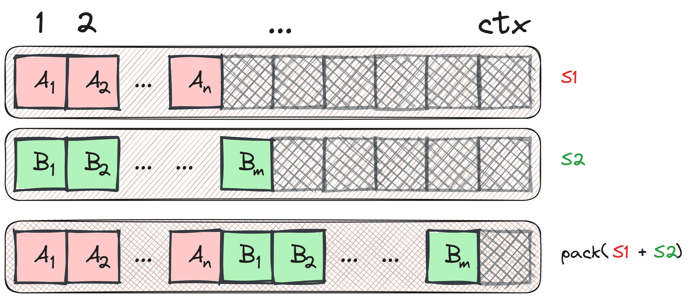
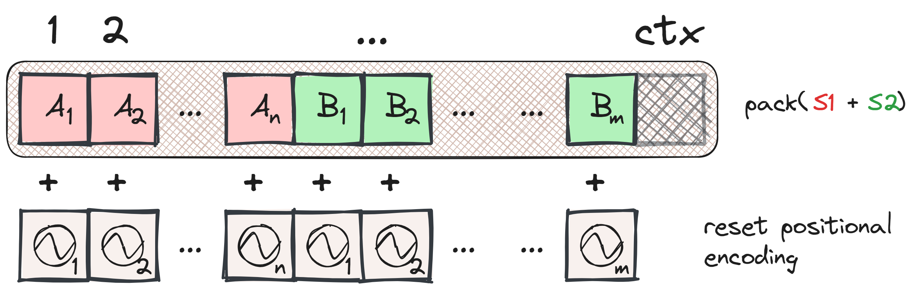
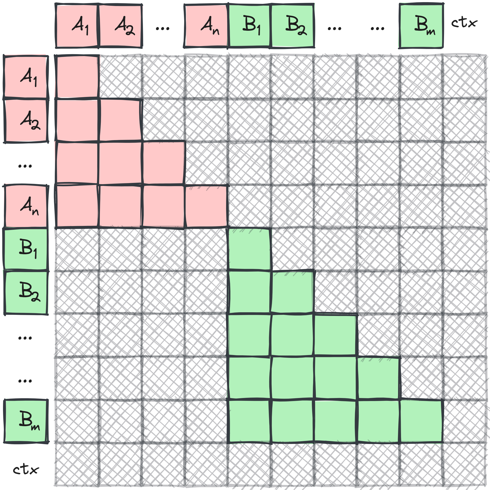

The context length of transformer models is rapidly increasing with each new generation of frontier models. For instance, Google’s latest Gemini 1.5 model can process up to 1 million tokens, equivalent to 1 hour of video or approximately 700,000 words. This increase is driven by advancements in hardware and the development of more efficient algorithms tailored to the specific demands of long-context training1.
1 An orthogonal approach involves training with a short context but performing inference on a long context. Packing techniques can still be beneficial during inference.
Long contexts introduce several challenges: identifying data that inherently requires long contexts (such as books, podcasts, and videos) and efficiently handling smaller context data. Simply concatenating these documents and feeding them into an autoregressive transformer can lead to cross-contamination of sequences. For instance, predicting a sequence S2 from an unrelated sequence S1 becomes nearly impossible if there is a significant difference in their subject matter.
The same issue arises during inference. If we dynamically batch tokens from different users, efficiency can be improved by grouping shorter conversations in the same batch. The solution to both of these issues is a technique called packing.
Packing
Packing sequences is a technique used in transformer models during training and inference to optimize the use of context length and reduce padding.
Consider a transformer model with a context length denoted as ctx. Let’s take two sequences, S1 and S2, with lengths n and m respectively, where n + m <= ctx. If we treat these sequences separately, the total padding required would be ctx - n + ctx - m tokens. However, by packing these sequences together into a single context, we can significantly reduce the padding to only ctx - n - m tokens.
The figure below illustrates the concept of packing two sequences.

Literature Review
Packing is briefly described in most papers on language modelling (in fact, most authors cite T5 for it), here are some from the literature:
| Paper | Quote |
|---|---|
| RoBERTa2 | “Each input is packed with full sentences sampled contiguously from one or more documents, such that the total length is at most 512 tokens.” |
| GPT-33 | “During training we always train on sequences of the full nctx = 2048 token context window, packing multiple documents into a single sequence when documents are shorter than 2048, in order to increase computational efficiency.” |
| T54 | “Whenever possible, we “pack” multiple sequences into each entry of the batch so that our batches contain roughly 216 = 65,536 tokens.” |
| T05 | “we use packing to combine multiple training examples into a single sequence to reach the maximum sequence length.” |
2 RoBERTa: A Robustly Optimized BERT Pretraining Approach
3 Language Models are Few-Shot Learners
4 Exploring the Limits of Transfer Learning with a Unified Text-to-Text Transformer
Some approaches use the packing described above naively and add an end-of-document token after the sequence is done to let the model figure out the difference between samples. This does seem to hurt performance due to cross-contamination mentioned before, but it might not have as big of an impact at scale6.
Dealing with Cross Contamination
To prevent cross-contamination when packing sequences, it is crucial to update both the positional information and the attention masks, not just concatenating the sequences. This ensures that the attention mechanism is still valid.
Update Positional Information
When using absolute positional encodings (or ALiBi, or absolute encodings), we need to reset the positional encoding index at the start of each new sample within the packed sequence. This reset ensures that each sequence retains its positional context, which is essential for the model’s accuracy.

For other positional encoding methods, such as RoPE, similar adjustments can be made. For RoPE, this involves resetting the rotation angles.
Update the Attention Mask
In self-attention mechanisms, it is necessary to ensure that one sequence cannot attend to another within the same packed context. This requires merging autoregressive masks for the self-attention layer, enforcing the restriction effectively:

This might be the most intrusive part to the codebase - it will require actually calculating a distinct attention mask per batch where we otherwise can simply have the standard diagonal created once for the whole batch. I imagine implementing this efficiently for ALiBi is not an enjoyable assignment.
That’s it!
Properly implementing these updates ensures that the model’s gradient step remains consistent, regardless of whether sequences are processed individually or packed.
It’s worth your time looking at figures 3 and 4, it’s from a paper that introduces the concept of cross-contamination. The paper additionally explains the performance of packing and the effect of ‘proper’ masking, it’s a great read!
Another paper that discusses masked packing but during inference time that goes in depth on the effect of packing on prefilling and the time to first token is Prepacking.
Can we Ignore Cross Contamination?
From personal experience, there is little support for packing in public codebases, often justified by the assumption that the data is not too correlated. Interestingly, the approach in Structured Packing in LLM Training Improves Long Context Utilization essentially ignores proper masking to benefit long-context learning.
It is interesting to see that GPT-3 did not use masked packing (from the quote above). It is quite possible that these cross contamination performance issues are not present in large scale training. Ofcourse, GPT-4 might be trained by masked packing, but that is not publicly disclosed.
Does Gemini/PaLM use masked packing? If they use t5x it seems so7:
7 They call it segmented data - from the T5x codebase.
A sequence length of 2048 was used for all models. Input examples are concatenated together and then split into sequences of exactly 2048 tokens, so that there are no padding tokens, but examples may be split in the middle. Input examples are differentiated from one another with a special [eod] token.